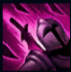
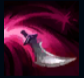
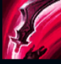
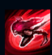
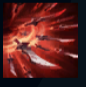

Katarina
| Katarina The Sinister Blade | |
|---|---|
| Release date | 19.09.2009 |
| Class | Assassin, Mage |
| Positions | Middle |
| Resource | Manaless |
| Range type | Melee |
| Adaptive type | Magic |
| Base statistics | |||
| Health | 602 – 2200 | Mana | N/A |
| Health regen. | 7.5 – 19.4 |
Mana regen. | N/A |
| Armor | 28 – 87.5 | Attack damage | 58 – 112.4 |
| Magic resist. | 32 – 53.25 | Crit. damage | 175% |
| Move. speed | 340 | Attack range | 125 |
Katarina este o asasină noxiană de cel mai înalt rang, letală în lupte și neclintită în hotărâre. Este fiica cea mare a legendarului general Du Couteau și și-a câștigat reputația pentru abilitatea de a elimina rapid inamici care nu bănuiesc ce-i așteaptă. Ambiția ei extraordinară o determină să-și aleagă ținte bine protejate, chiar și atunci când asta îi pune în pericol aliații – dar, indiferent care i-ar fi misiunea, Katarina nu ezită să-și îndeplinească datoria, reglând conturile cu pumnalele sale zimțate. |  |
VORACITATE Când moare un campion inamic căruia Katarina i-a provocat daune recent, timpii de reactivare rămași ai abilităților ei sunt reduși semnificativ. Dacă ridică un pumnal, Katarina îl folosește pentru a-și lovi toți inamicii din apropiere, provocându-le daune magice. |
||
|---|---|---|---|---|
 |
PUMNAL CU RICOȘEU Katarina aruncă spre țintă un pumnal care ricoșează de la un inamic la altul și cade apoi pe jos. |
|||
 |
PREGĂTIRE Katarina aruncă un pumnal în aer direct deasupra ei și primește un bonus la viteza de mișcare. |
|||
|  |
SHUNPO Katarina se deplasează instantaneu către țintă și o lovește dacă este vorba de un inamic sau lovește cel mai apropiat inamic în caz contrar. |
|||
 |
LOTUSUL MORȚII Katarina devine un vârtej terifiant de tăișuri și le provoacă daune magice imense celor mai apropiați 3 inamici pe întreaga durată a efectului. |